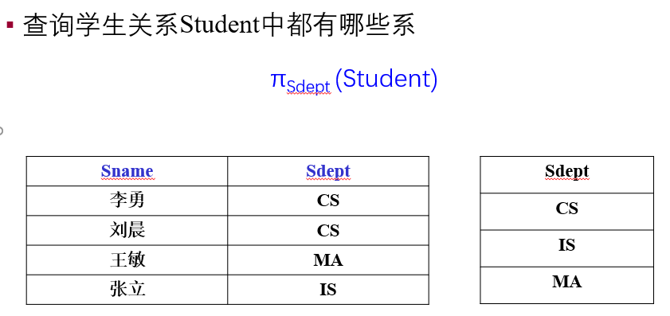
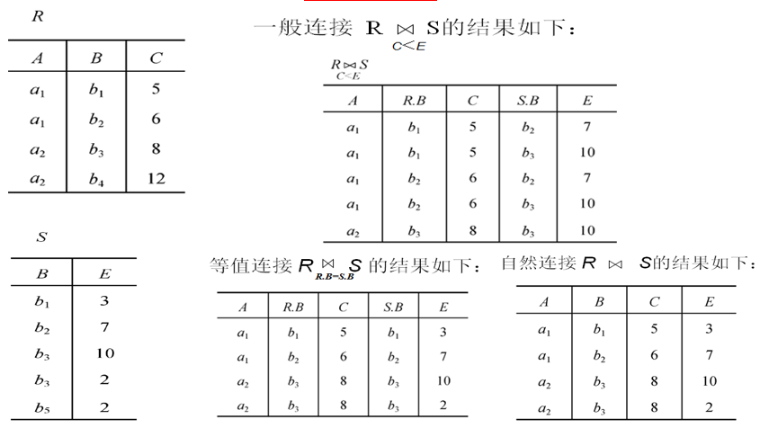
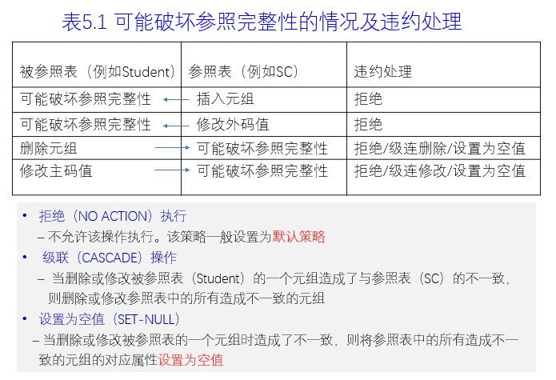
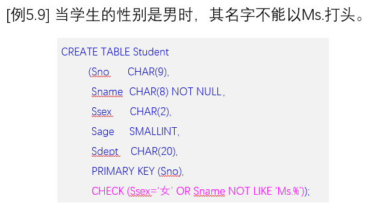
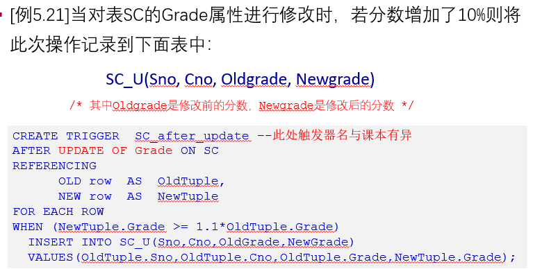

数据库期中复习
第二章
Q：关系模型的三个部分分别是什么？
C：关系数据结构，关系操作集合 关系完整性约束
Q：候选码 主码 和主属性都是什么？
C：若关系中的某一个属性组的值能唯一地标识一个元组，而其子集不能，则该属性组被称为候选码，从候选码中选定一个为主码，候选码的诸属性称为主属性
即：主码的属性不是主属性，主属性是候选码的所有属性。
关系是笛卡尔积的有限子集，无限关系在数据库系统中是无意义的。
关系的每一个分量必须是不可分的数据项。
关系模式的形式化定义：R(U,D,DOM,F)
Q：什么是关系模型的完整性规则？
C：关系模型中可以有三类完整性约束：实体完整性，参照完整性，用户定义的完整性。
关系模型的完整性规则就是对关系的某种约束条件。
①主属性不能取空值
②若外码是该表的主码，则此时外码不能取空值。
Q：查询操作的基本操作是哪些？
C：选择、投影、并、差、笛卡尔积，其他的如除，交等都可以导出。
Q：关系操作的特点是什么？
C：操作的对象和结果都是集合。
R∩S=R-（R-S）
Q：投影有什么注意事项？
C：投影之后不仅取消了原关系中的某些列，而且还可能取消某些元组（避免重复行）
E：
在投影后，取消了重复的CS元组，这点要特别注意，用在之后的SELECT DISTINCT
Q：等值连接和自然连接有什么区别？
C：自然连接是一种特殊的等值连接，它要求两个关系中进行比较的分量必须是相同的属性组，并且要在结果中去掉其中一个重复的属性。自然连接会去除掉重复列，而等值连接不会。
E：
Q：什么是外连接？
C：即将悬浮元组保存至结果关系中，在其他属性处填上空值(NULL)，左外连接就是全要左边的，右边可以有NULL值，右外连接相反。
Q：什么是除运算？如何理解除运算？
C：设关系R除以关系S的结果为关系T，则 T包含所有在R但不在S中的属性及其值，且T的元组与S的元组的所有组合都在R中。
除的实际含义：有一个现实意义的集合，希望在另一个集合中找出“包含”该集合的元组集
–例1：找出选修了所有课程的学生
“所有课程”
“学生”
“学生”÷“所有课程”
要找学生，什么学生，选修了所有课程的学生，学生包含了“所有课程”，即学生÷所有课程
注：被除数和除数必须有公共部分，
押题：
解释候选码和主码的关系：
若关系中的某一个属性组的值能唯一地标识一个元组，而其子集不能，则该属性组被称为候选码，从候选码中选定一个为主码，候选码可以有多个，主码是其中的一个。
第三章
DROP SHCEMA CASCADE RESTRICT
CASCADE:删除模式时将该模式下所有的数据库对象删除
RESTRICT可以拒绝执行
常用的数据类型：
VARCHAR(n)：最大长度为n的变长字符串
NUMERIC(p，d)：定点数，p位数字d位小数，等于decimal
Q：如何修改基本表？
C：ALTER TABLE STUDENT
ADD CONSTRAINT （可以增添约束条件、新列）
1 | ALTER TABLE STUDENT |
在删除时，默认的删除方式是RESTRICT
Q：怎么查询数据？
Q：GROUP BY 语句怎么使用？
如果有GROUP BY语句，则将结果按照列名1进行分组。通常会在每组中作用聚集函数，若有HAVING短语，则只有满足指定条件的组才会输出。
Q：怎么使用别名？
C：
1 | SELECT SNAME NAME,2014-SSAGE AGE |
在原名之后加一个空格，再加上别名即可以
Q：怎么去重？
C：SELECT DISTINCT SNO
Q：怎么匹配字符串？
C：WHERE SNAME LIKE ‘刘%’
WHERE SNAME LIKE ‘_阳%’
\_用来转义
1 | SELECT SNO,GRADE |
聚集函数只能用于select语句和group by的having子句
Q：GRUOP BY 是什么含义？
C：分组后聚集函数将作用于每一个组，即每一个组都有一个函数值。
常见错误：WHERE子句不能用聚集函数作为表达式
1 | SELECT SNO,AVG(GRADE) |
Q：怎么自身连接？
第四章
数据库的安全性是指保护数据库以防止不合法使用所造成的数据泄露、更改或破坏
C2实现DAC（自主存取控制）B1实现MAC（强制存取控制）
Q：什么是DAC？
C：
Q：什么是MAC？
C：
第五章
Q：什么是数据库的完整性？
C：数据库的完整性包括数据库的正确性和相容性、
Q：PRIMARY KEY有几种定义方式，分别怎么定义？（属于实体完整性）
C：对于单属性构成的码，可以是列级说明：SNO INTEGER PRIMARY
或者是表级说明：PRIMARY KEY(SNO)
对多个属性构成的码只能是表级：PRIMARY KEY(SNO,CNO)
Q：FOREIGN KEY怎么定义？（属于参照完整性）
C：
1 | FOREIGN KEY(SNO) REFERENCES Student(SNO), |
Q：对于违反参照完整性的操作，该怎么办？
C：
Q：用户定义的完整性怎么写？
C：
对于列值，可以检查NOT NULL ,UNIQUE ,CHECK子句，如
1 | GRADE SMALLINT CHECK(GRADE >=0 AND GRADE<=100) |
对于元组值，可以用CHECK来限制

Q：如何写完整性约束命名子句？
C：完整性约束条件包括 NOT NULL UNIQUE CHECK PRIMARY KEY FOREIGN KEY
1 | CONSTRAINT PK_DEPTNO PRIMARY KEY(SNO)， |
Q：如何修改表的完整性限制？
C：
1 | ALTER TABLE STUDENT |
对于重新变更限制条件的，需要先删除原有的限制，再重新加入新的限制
1 | ALTER TABLE STUDENT |
Q：如何定义触发器？
C：
习题押题：
1.关系R的属性A参照引用关系T的属性A，T的某条元组对应的A属性在R中出现，当要删除T的这条元组时，系统可以采用的策略包括 拒绝执行 级联删除 置为空值
2.综合题（自己完整做一遍）